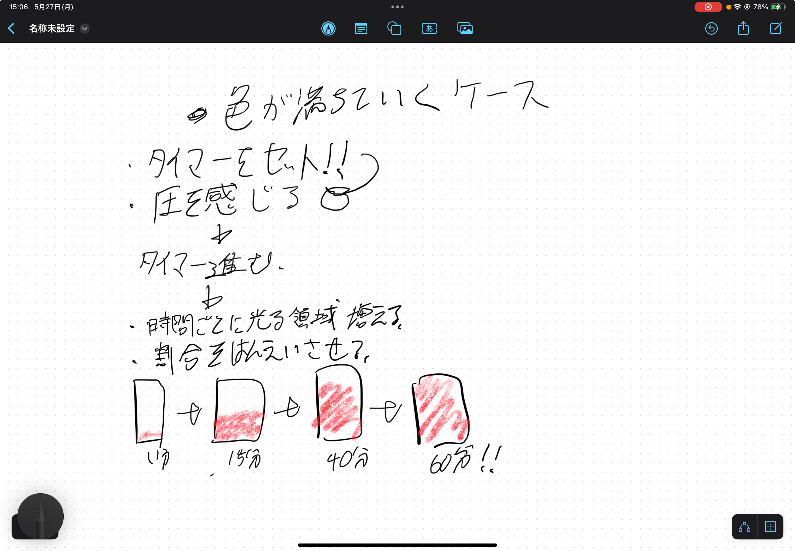

プロトタイピング①
5/272024
カテゴリー：課題
班メンバー
企画案
今回、私たち３人は、現代人のスマホ依存症に注目し、進んで制限しようと思える制限ケースの作成を考えています。
現状考えている案は感圧センサーを使い、ケースにスマホを入れていた時間によって背面ライトの光が増していき、視覚的に自分がどれほど我慢したのかわかるようにしようとしています。
プロトタイピング②
6/32024
カテゴリー：課題
設計図１
] MDFで箱を作り、土台を完成させながら、光で時間を伝えられるようにその上からアクリルをかぶせるようなデザインを考えています。動作確認
まず、手元に届いた圧力センサーがちゃんと動くのかを確認しました。
参考にしたサイトはこちらです
プロトタイピング③
6/102024
カテゴリー：課題
プロトタイプするぞ
まず初めに、スマホを入れるための箱を作りました。
毎度のごとく、MakerCaseを使用してデータを作成。
そのデータに充電コード用の穴などをつけています。
プロトタイピング④
6/172024
カテゴリー：課題
時間で光り方が変わるコード
先週、プロトタイプの箱が出来たので次は圧力を感知した時間によってＬＥＤテープが光り方が変えられるコードを考えました。
完成形のイメージとしては、徐々に光が強くなり、スマホを触っていない時間が「感覚的」にわかるようにしたいのですが
とりあえず一定時間ごとに光が増えるようにコードを製作しました。
下記のコードは動画のものに、少し改良を加えたものです。
- #include <Adafruit_NeoPixel.h>
- // NeoPixelの設定
- #define NUM_PIXELS 5
- #define PIN_PIXELS 6
- Adafruit_NeoPixel pixels(NUM_PIXELS, PIN_PIXELS, NEO_GRB + NEO_KHZ800);
- // 圧力センサーのピン設定
- #define PRESSURE_SENSOR_PIN A0
- // LEDの色設定
- #define LED_COLOR_R 255, 0, 0
- #define LED_COLOR_Y 255, 255, 0
- #define LED_COLOR_O 255, 69, 0
- #define LED_COLOR_W 255, 255, 255
- #define LED_COLOR_B 0, 0, 255
- // 初期LEDの数
- int numLEDs = 0; // 最初はLEDはすべて消灯状態
- void setup() {
- pixels.begin(); // NeoPixelの初期化
- Serial.begin(9600); // シリアル通信の開始（デバッグ用）
- }
- void loop() {
- // 圧力センサーの値を読み込む
- int sensorValue = analogRead(PRESSURE_SENSOR_PIN);
- if (sensorValue < 200) { // 圧力センサーの閾値（例: 200）
- // 圧力がかかっている場合
- // LEDを点灯させる
- for (int i = 0; i < numLEDs; i++) {
- switch(i) {
- case 0:
- pixels.setPixelColor(i, pixels.Color(LED_COLOR_B));
- break;
- case 1:
- pixels.setPixelColor(i, pixels.Color(LED_COLOR_W));
- break;
- case 2:
- pixels.setPixelColor(i, pixels.Color(LED_COLOR_Y));
- break;
- case 3:
- pixels.setPixelColor(i, pixels.Color(LED_COLOR_O));
- break;
- case 4:
- pixels.setPixelColor(i, pixels.Color(LED_COLOR_R));
- break;
- }
- }
- pixels.show(); // LEDに色を表示
- // 5秒待つ
- delay(5000);
- // LEDの数を増やす（最大NUM_PIXELSまで）
- if (numLEDs < NUM_PIXELS) {
- numLEDs++;
- }
- } else {
- // 圧力がかかっていない場合、すぐにLEDを消灯させる
- pixels.clear(); // すべてのLEDを消灯
- pixels.show(); // LEDに反映
- // LEDの数を初期化
- numLEDs = 0;
- }
- delay(100); // 少し待つ
- ｝